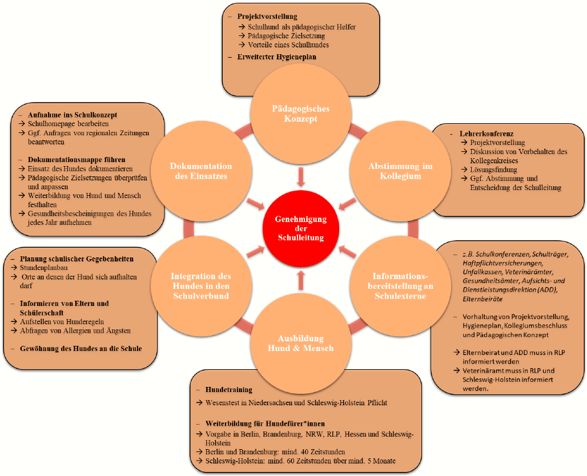

5 Planerische Bereiche
Im Etablierungsprozess sind mehrere planerische Bereiche zu berücksichtigen, um diesen schließlich erfolgreich abschließen zu können. Zunächst sind diese in diesem Kapitel überblicksartig dargestellt, ehe in den darauf folgenden Kapiteln auf einzelne Bereiche näher eingegangen wird.
Durchlaufen eines Ausbildungsprogramms Sowohl der ausgewählte Hund als auch die hundeführende Lehrperson sollten vor dem ersten Einsatz mit Kindern ihre Ausbildung abgeschlossen haben. Dies umfasst sowohl die spezifische Ausbildung als Mensch-Hund-Team als auch die lehramtsspezifische Ausbildung (Vorbereitungsdienst/ Referendariat bei Lehrkräften/ Berufsausbildung bei Erzieher*innen) der schulhundführenden Person.
Planung der schulischen Gegebenheiten - Stundenplanumbau - Einsatzzeiten besprechen - Ort für Hund → Lehrkraft in anderer Klasse unterrichtet - Rückzugsort im Klassenraum - Vorgaben, wo Hund sich lösen kann - Probezeitraum für den Schulhundeinsatz - Schulhundregeln aufstellen
Gewöhnung des Hundes an die Umgebung - zunächst einmal ohne Kinder (Ferien, Unterrichtsende) - dann mit wenigen Kindern (AG, Hortkindern in den Ferien) - dann die gesamte Klasse (nach Einführung der Schulhundregeln)→ zu Beginn besser zwei Lehrkräfte
Aufnahme ins Schulkonzept - Darstellung auf Homepage - Darstellung in der Schule (Aushänge) - regelmäßiges Führen einer Dokumentationsmappe
Regelmäßig im Projektablauf - Überprüfung durch den Tierarzt sowie Impfungen und ein schriftlicher Nachweis über Gesundheitszustand - regelmäßige Weiterbildung im Bereich der hundspezifischen Pädagogik - regelmäßige Anpassung der schulischen Absprachen und Gegebenheiten bei Veränderungen
library(knitr)
knitr::include_graphics(rep("Grafik.png"))